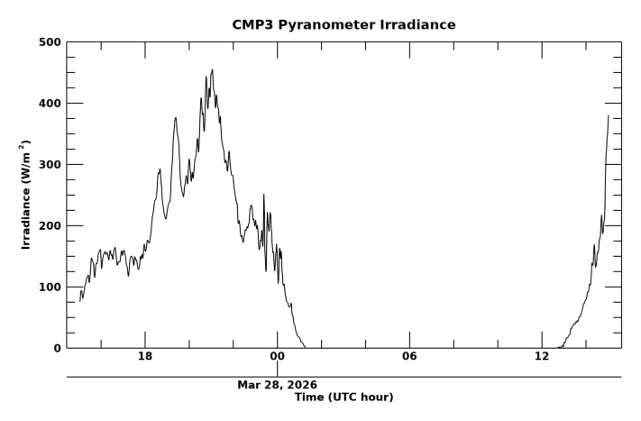

Pyranometer
The Kipp & Zonen CMP 3 pyranometer measures shortwave solar irradiance (W/m²) incident on a horizontal surface. The plot below shows the latest 24-hour time series.
24-Hour Time Series

Last updated: 18:27 UTC, March 27, 2026
About This Instrument
The pyranometer is mounted on the east platform of the Skywatch Observatory on the roof of the Duane Physics Building. It measures the total hemispheric shortwave irradiance from 300 to 2800 nm. Data is recorded every second and averaged over one-minute intervals.